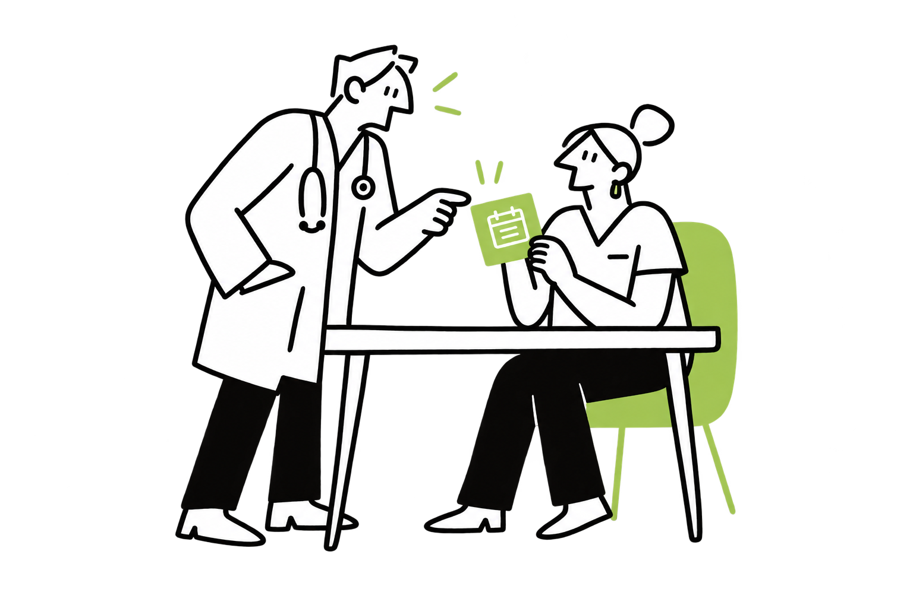

Capture illustration candidates
Four original lime scenes plus blue and coral variants. Existing webpage imagery is unchanged.

clinic-team-lime.pngappointments-lime.pngpatient-records-lime.pngcare-messaging-lime.pngappointments-blue.pngcare-messaging-coral.pngExact prompts · Recreation guide